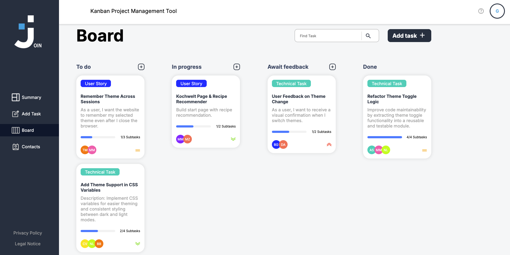

<section>
    <div class="project-overlay">
        <div class="project-close-btn-container">
            
        </div>
        <div class="project-overlay-content">
            <div class="project-container">
                <div>
                    <h1>01</h1>
                </div>
                <div>
                    <h2>Join</h2>
                </div>
                <div class="project-description">
                    <span>What is this project about?</span>
                    <span class="project-description-content">Task manager inspired by the Kanban System. Create and
                        organize tasks using drag and drop functions, assign users and categories.</span>
                </div>
                <div class="project-technologies-container">
                    <div class="project-technologies">
                        
                        <span>CSS</span>
                    </div>
                </div>
                <div class="project-overlay-btn-container">
                    <button>
                        <span>GitHub</span>
                        
                    </button>
                    <button>
                        <span>Live Test</span>
                        
                    </button>
                </div>
            </div>
            <div class="project-screen-container">
                
            </div>
        </div>
        <div class="next-project">
            <button>Next project</button>
            
        </div>
    </div>
</section>